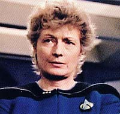
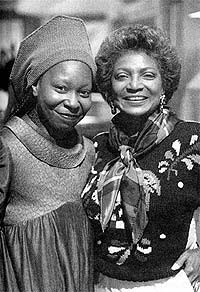
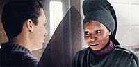
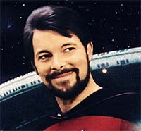
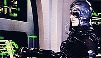
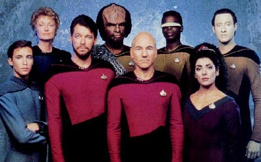

|


|
Captulo
4 - Nadando contra a mar     Altos e baixos Apesar da greve de roteiristas, a reciclagem de um roteiro antigo da "Phase II" (que originou o episdio "The Child") e a busca de roteiros especulativos enviados por roteiristas antes da greve (de onde saiu o sensacional episdio "The Measure of a Man") conseguiram segurar o ritmo da temporada. E, com todas as dificuldades, a segunda temporada de A Nova Gerao foi consideravelmente melhor que a primeira. E, paradoxalmente, produziu o pior episdio da srie. Essa aberrao ocorreu em razo de uma filosofia de produo que acabou se provando equivocada: no houve um controle muito rgido de gastos sobre os episdios individualmente, contando com o fato de que, se alguns naturalmente custariam mais, outros acabariam naturalmente custando menos, de forma que a conta no fim do ano fecharia exata. Isso no aconteceu. E o resultado foi que os espetculos de valores de produo vistos em episdios como "Elementary, Dear Data" e "Q Who?" custaram na qualidade dos ltimos episdios da temporada, em especial do derradeiro, "Shades of Gray", feito praticamente com um "no-roteiro" e com muitos clipes retirados de episdios anteriores. Curiosamente, o melhor diretor da srie foi chamado a trabalhar nele, Rob Bowman. Ele relembra: "Rick Berman me ligou e disse, 'Ei, temos esse episdio; o ltimo da temporada e queremos economizar dinheiro porque estouramos em episdios anteriores. So dois dias de preparao e dois --ou trs-- de filmagem.' Eu pensei, 'Oh meu Deus, vai ficar simplesmente horrvel', mas ele disse, 'Olhe, eu vou pagar um cheque completo para voc fazer esse episdio!' Eu estava atravessando um divrcio na poca e no ia dizer no ao dinheiro, alm de ter a chance de voltar a sair com meus amigos. Eu olhei para ele como uma oportunidade; 'Quantos modos eu posso descobrir de filmar Jonathan deitado em uma mesa tendo um pesadelo?'" Bowman j havia dirigido clssicos como "Where No One Has Gone Before", "Datalore", "Elementary, Dear Data" e "Q Who?", mas acabou ficando conhecido entre os produtores da srie apenas como o "rapaz da pizza". Ele conta a histria. "Eu fui ao trailer de Jornada e conheci Bob Justman, que, como voc sabe, produziu a srie anterior, e ele estava surpreso com a minha idade --na poca eu tinha 26", relembra o diretor. "Mas ele disse, 'bem, de toda forma, eu gosto de como voc filme e estaramos interessados em ter voc fazendo Jornada nas Estrelas'. Eu estava l com o Bob quando o Rick Berman enfiou sua cabea pela porta e olhou para mim e disse, 'Pizza?' Eu disse, 'Desculpe-me?' e ele disse, 'Ns pedimos pizza; voc o rapaz da pizza?' e eu disse, 'No, eu sou Rob Bowman. Eu sou seu prximo diretor, espero!'" A vaga de Bowman estava garantida. O diretor impressionou principalmente o criador da nova srie, Gene Roddenberry. "Gene estava por l um bocado. Depois de dois ou trs dias de filmagem ele at veio ao set e me disse que ele gostou muito do material que eu estava filmando. O diretor de fotografia na poca disse para mim, 'Sabe, ele nunca faz isso. Voc deveria se sentir muito feliz.' Eu me senti incrvel! Todos os roteiros que eu dirigi eu tinha uma reunio com Gene, e era uma honra trabalhar com ele. Eu tive sorte de estar por perto antes de ele falecer." O carinho o mesmo por Rick Berman, que estava lado a lado com Roddenberry na produo da srie, enquanto Maurice Hurley cuidava da equipe de roteiristas. "Rick foi muito, muito bom para mim do comeo at meu ltimo episdio, e eu tenho por ele muita gratido." Embora Jornada tradicionalmente fosse controlada por escritores e produtores, Bowman disse ter tido muita liberdade naquela poca. "Eu estava muito entusiasmado e queria ser parte integrante da srie e pareceu que Rick Berman me deu um pouco mais de latitude do que a um diretor tpico", diz. "Mas acho que eu me dei muito, muito bem, e Rick me protegeu e me deu muitas oportunidades para experimentar coisas e filmar a srie de modos diferentes, e tentar mover a luz por l, o que nem sempre deu certo! Mas eu senti como se minha voz importasse; eu senti que quando eu falava eu era ouvido, e que eu era parte da soluo dos problemas das filmagens dirias." Bowman acabou deixando a srie aps "Shades of Gray", voltando apenas uma vez na quarta temporada da srie. No foi por falta de gosto pelo franchise. "Havia muitas novas sries de TV audaciosas l fora na poca --'Miami Vice', 'Crime Story'-- e eu estava fazendo Jornada, que algumas pessoas pensavam que era meio esgotada e simples. Mas no era; era altamente imaginativa e criativa, e os produtores-executivos eram muito acessveis. Eu pensei, 'Sou parte da histria aqui; por que eu no gostaria de faz-lo? Eu no quero ir fazer tiras e advogados.' Mas quando eu contratei um novo empresrio ele disse, 'Eu no quero mais voc fazendo Jornada nas Estrelas.'" E ele no foi o nico a sair. Quando entrou para a equipe de roteiristas, no incio da srie, Torme conseguiu um acordo com o criador para no participar das reunies dos roteiristas ou rescrever roteiros. Ele s trabalhava sozinho e tinha um compromisso de escrever trs roteiros por temporada. E ele no queria escrever qualquer coisa. "Na minha mente, durante o primeiro ano, um dos problemas com a srie foi que ela jogou muito com a segurana e foi tmida no que estava fazendo. Havia um tipo de viso geral conservadora --'Melhor no a fazermos muito engraada ou estranha porque isso pode afastar as pessoas'. Esse conservadorismo foi carregado para a segunda temporada. Eu definitivamente tinha a noo de que eu queria sacudir o barco. Eu sentia que no era algo desleal o que eu queria fazer, porque a maioria dos episdios estavam sendo bolas rpidas baixas no centro. Eu pensei que se eu atirasse umas bolas de curva, eu estaria fazendo um servio srie. Isso no era o que a srie seria toda semana, ento por que no fazer algo que era um pouco diferente?" Na primeira temporada, seus trs roteiros foram "Haven", o campeo "The Big Goodbye" e o controverso "Conspiracy" (que foi rejeitado pelo lder da equipe de roteiristas Maurice Hurley, mas Torme conseguiu usar sua relao prxima com Roddenberry para faz-lo ser filmado). Quando comeou a segunda temporada, os produtores decidiram mudar o personagem da mdica para introduzir mais conflito entre os personagens. Torme tinha suas prprias idias sobre a mudana: "Eu fiz uma forte sugesto para uma raa de aliengenas que conhecida pela honestidade absoluta todo o tempo. Para eles, contar at uma mentirinha to ruim quanto contar uma mentira monstruosamente grande. Eu achei que seria interessante ter um mdico que sempre vai dizer a verdade sobre seu status como paciente e sobre o que eles pensam de voc. Eu defendi isso porque pensei, 'No vamos simplesmente trazer outro mdico humano. Vamos fazer algo que, s por sua natureza, ir causar alguma controvrsia e conflito.' Eu realmente senti que teria sido uma coisa tima se eles fizessem mas a idia no teve nenhuma receptividade e nunca foi seriamente considerada." Seu primeiro roteiro durante a segunda temporada deveria ter sido um episdio com Spock, mas ele foi arquivado quando eles no puderam contratar Leonard Nimoy (o que acabou acontecendo no quinto ano, com outra histria). "Eu ia escrever o episdio do Spock. Isso teria sido algo que eu realmente teria gostado; seria divertido fazer a ponte entre as duas sries. Eu at escrevi o que eu acho que teria sido uma histria incrvel, mas, por alguma razo, ela caiu de lado e eu a afastei. Ia voltar ao Guardio da Eternidade." Em vez disso, seu primeiro roteiro do segundo ano foi "The Schizoid Man". Algumas mudanas ao roteiro foram feitas por Hurley, incluindo a remoo de uma cena em que Data careca como Picard (no comeo do episdio, Data acaba com uma barba como a de Riker), mas Torme ficou basicamente satisfeito. As mudanas feitas em "The Schizoid Man", entretanto, eram um preldio para o que viria depois, gerando muito conflito entre ele e Hurley. Seu episdio seguinte era "The Royale". Seu roteiro era bem diferente da verso final filmada; em sua histria o hotel era baseado nas memrias de um astronauta moribundo (e no em um livro) e o astronauta aparece como um personagem. Muitas mudanas foram feitas no roteiro, a ltima delas tendo sido a remoo do astronauta, o que revoltou Torme a ponto de tirar seu nome e usar um pseudnimo. "Eu realmente achei que ia funcionar. Eu me lembro de pensar, 'Esse vai ser um episdio de torcer a mente'. Eu adorei seu surrealismo. Eles fizeram uma grande diretriz na poca --'No queremos grandes papis convidados. Queremos nos concentrar em nossos personagens'. Ento o astronauta se tornou um esqueleto e tudo sobre ele na histria tinha sumido. Essa foi a maior coisa com que tive problema nas rescritas; ele era o corao da histria para mim. Pea por pea, quando via essas rescritas no roteiro, eu s pensava, 'Oh meu Deus', porque era to diferente. Foi a que 'Keith Mills' surgiu. Eu achei muito doloroso. Eu no acho que tenha visto todo o episdio, porque eu no acho que poderia ter terminado de ver." Seu roteiro final foi "Manhunt". Novamente, houve grandes mudanas no roteiro, principalmente nas cenas de Dixon Hill, e de novo ele usou um pseudnimo. Aps sua experincia com "The Royale", ele nem se dedicou muito a "Manhunt" e nunca viu o episdio. "Eu realmente no me atirei de corpo e alma nele. Eu tinha de faz-lo porque estava sob contrato. Eu sabia que essa coisa no seria feita do jeito que queria, ento eu basicamente no me apeguei a ele como eu fiz com 'The Royale'. Eu usei um pseudnimo diferente como um outro protesto. interessante, porque no Sindicado dos Escritores voc pode ter dois pseudnimos e ento eles esto com voc pelo resto da sua vida. Essas so os nicos roteiros que 'Terry Devereaux' e 'Keith Mills' escreveram antes de sumirem da face da Terra!" No fim da segunda temporada, Maurice Hurley saiu da srie, e Berman pediu a Torme para voltar, mas ele decidiu que era hora de partir. Olhando para trs ele tem boas recordaes. "Eu me diverti. Tive uma bela experincia l." Ele tem elogios para distribuir a Rick Berman. "Ele tem uma incrvel capacidade de manter tudo nos eixos e ele teve um papel central em conduzir a srie por alguns tempos difceis." Mas a pessoa que mais impactou Torme foi Roddenberry. "Minha relao com Roddenberry teve um grande efeito em mim e mudou o curso da minha carreira em muitos modos. Ele tinha muita afeio por mim e realmente me colocou sob sua asa. Muito cedo ele me disse que sentia que eu estaria criando minha prpria srie algum dia, e ele me mostrou os benefcios de fazer isso. Isso realmente despertou meu interesse em criar meu prprio programa, o que eu no acredito que eu teria feito se no fosse por isso. Devo muito a ele." Depois de deixar Jornada, Torme tornou-se co-criador de "Sliders" e foi produtor-executivo da srie pelas duas primeiras temporadas. Repartindo as trilhas   |